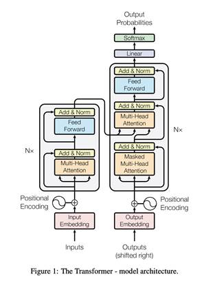
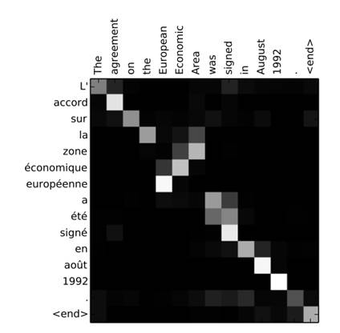

Transformers: The Past, Present, and Future
With the recent developments in natural language processing, several new architectures have been created and refined. After all, it�s important for computers to understand and express information through language. It�s how we as a species communicate!
In natural language processing, there are a ton of challenges. But it can be broken down into two major questions.
1) How can the computer understand what words mean?
2) How can the computer process information sequentially?
The challenge is finding architectures that can help us answer these questions.
As Toren writes in his �Recurrent Neural Network� (RNN) page, RNNs were the first architecture to help computers understand language. RNNs process one word at a time and pass information along. Using this approach, they try to solve problems.
Let�s assume that our task is translation. Imagine we are translating from Spanish to English. An RNN would process each word of the Spanish input and spit out the equivalent in English. For example, �El perro es grande� would yield a translation of �The dog is big.� Pretty good, right?
The problem with RNNs is that language is complex and convoluted. Not every sentence is as simple as �The dog is big.� RNNs struggle with long term dependencies, meaning that they forget information in long sentences. Take the sentence, �Janet finally understood the bowel problems of her dog, and implemented a solution to prevent her from pooping inside the house so frequently.� This is a long sentence, and an RNN would likely forget about the beginning of the sentence by the time it was processing the middle or end. It also would have a tough time figuring out which pronouns refer to who. Is Janet�s dog pooping inside the house? Or is Janet doing it?
The bigger problem is that RNNs are tough to train. They experience a problem called vanishing/exploding gradient. Think of it like tweaking a mistake. The RNN either doesn�t fix its mistakes enough, or it tries to overcompensate for its mistakes by overcorrecting it. They also can�t take in that much information to train, as they can�t undergo a process called parallelization, where you �speed up training by throwing more GPUs at it� (Dale).
So what�s the better solution?
Transformers!

Transformers are an architecture developed by Google in 2017, capable of more advanced language processing tasks. Although they are significantly more complex than I will explain in this page, here are the three characteristics that set it apart from other architectures.
Firstly, they use something called positional encoding. If you remember with RNNs, they sequentially process words by going from one to the other. A word is remembered as being between two other words. Now, this can be a problem if you forget what the words are, a problem that RNNs frequently face. Positional encoding is a technique of assigning quantitative values to each word, referring to that number instead of its relative position in calculations.
Secondly, Attention is all you need. The Attention mechanism, that is. When you translate a sentence, you often use a broad context. You usually will look at the entire sentence before producing its translation. Similarly, Attention allows the model to look at entire sections of text while performing tasks. It then �attends to� (thus, it is named Attention) certain words. This heat map shows the translation of an English sentence to French, and you can see which words are important during the translation of certain words. Words that are unimportant in the translation (say, the English word agreement� during the translation of �la�) are dark whereas words that are crucial to the translation at certain points are lit up.

The third and final component of transformers is called self attention. We were translating from English to French above. But assume we�re not translating at all, and that we�re trying to uncover as much semantic information as possible about English. Well, self-attention allows the model to pick up on rules of grammar, parts of speech, and relationships between words that it discovers. It learns to disambiguate certain words like server (the metal plate versus the computational resource) or set (don�t get me started on the 430 definitions).
And �embedded� within the transformer architecture are word embeddings (pun absolutely intended). Word embeddings are tools that transform words from something humans to understand to what computers understand. Computers can do all of these cool tasks related to language, but they don�t actually know what any words mean. They understand numbers and math. So word embeddings translate language to math, plotting each word to a point in linear space. Words that are similar to each other are plotted close to others, and words that are far from each other in meaning are graphically represented farther away.
Transformers are the new developments in the emerging field of natural language processing, and it�s exciting to see what all they will be able to do in the future. We�ve already witnessed the astounding abilities of the GPT-3 model developed by OpenAI and the multi-modal Wu Dao model developed by China that can answer comprehension questions and write coherent stories and news articles. Who knows? At this rate, natural language processing models may be able to write informational articles explaining themselves - like this one!
Sources for additional reading:
https://www.analyticsvidhya.com/blog/2019/06/understanding-transformers-nlp-state-of-the-art-models/
https://daleonai.com/transformers-explained
https://huggingface.co/docs/transformers/index
https://neptune.ai/blog/comprehensive-guide-to-transformers